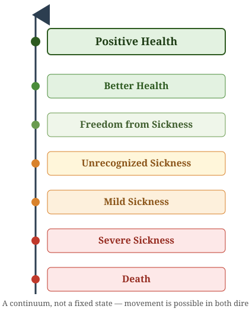
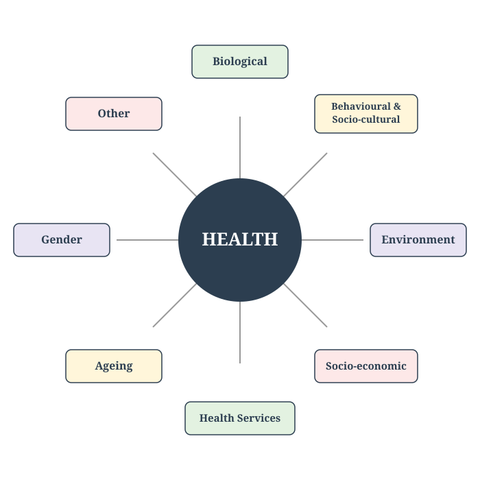
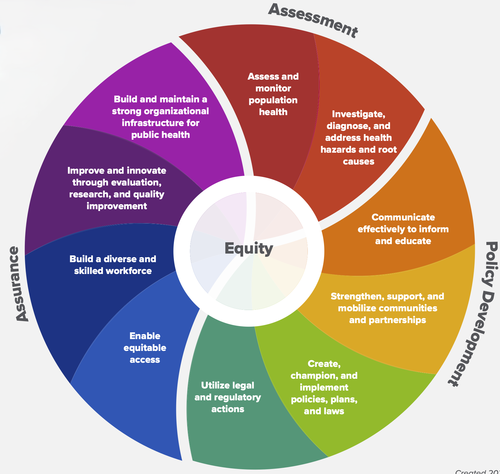
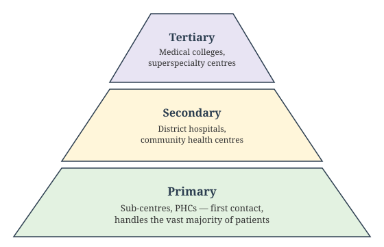
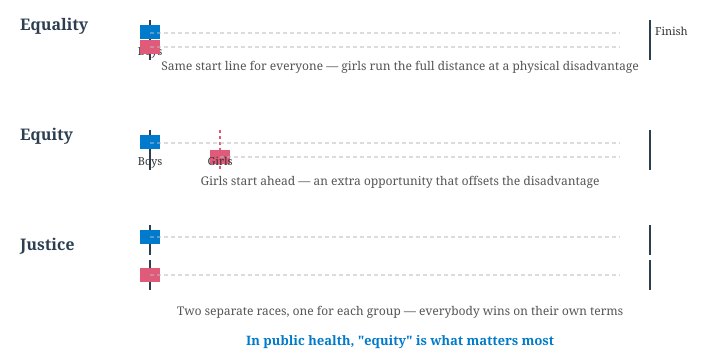

The Natural History of Disease and Levels of Prevention
Welcome
Concept of Health and Disease
Learning Objectives:
Compare the biomedical, ecological, psychosocial, and holistic models of health
Define disease and distinguish it from illness and sickness
Describe the epidemiological triad of agent, host, and environment
Explain the natural history of disease and its phases
Describe the iceberg phenomenon of disease
Apply the levels of prevention — primordial, primary, secondary, tertiary
Distinguish Koch’s postulates from the Bradford Hill criteria of causation
Classify indicators of health and describe the PQLI and HDI
State who is responsible for realizing the right to health
NMC Community Medicine Code: CM1
🟢 MUST KNOW · 🟡 SHOULD KNOW · 🟣 MAY KNOW · 🧡 QUESTION
Lecture 1: Concept of Health
📚 Lecture 1 of 3 · CM1.L1
Naming and scope of community/preventive/social medicine; concept, definitions, and dimensions of health; well-being and quality-of-life indices (PQLI, HDI); determinants of health; right to health and responsibility for health; India’s health status
Evolution and Scope of Community Medicine
🟢 MUST KNOW
Community Medicine broadens the scope of medicine from the individual to the community.
It integrates preventive, promotive, curative, and rehabilitative services through organized efforts.
Core idea: Health is achieved not only by treating disease but by improving living conditions, sanitation, nutrition, and education.
Hygiene, Preventive, and Social Medicine
🟡 SHOULD KNOW
Field
Focus
Example
Hygiene
Personal and environmental cleanliness
Hand‑washing, safe water
Preventive Medicine
Preventing disease before it occurs
Immunization, screening
Social Medicine
Studying social causes of disease
Poverty, housing, education
Community Medicine
Applying all these at population level
National health programs
Key link: Preventive medicine acts at the individual level; social medicine acts at the societal level; community medicine integrates both.
Public Health: Definition and Functions
🟢 MUST KNOW
“The science and art of preventing disease, prolonging life, and promoting physical health and efficiency through organized community efforts for the sanitation of the environment, the control of community infections, the education of the individual in principles of personal hygiene, the organization of medical and nursing services for early diagnosis and preventive treatment of disease, and the development of social machinery which will ensure every individual a standard of living adequate for the maintenance of health.” — C.E.A. Winslow, 1920
Functions: - Health promotion through education
- Disease prevention via immunization
- Health restoration through medical care
- Rehabilitation of the handicapped
Aim: Create conditions for good health — aligning with WHO’s 1948 definition.
Difference Between Community Medicine, Family Medicine, Preventive Medicine, and Social Medicine
🟢 MUST KNOW
Aspect
Community Medicine
Family Medicine
Preventive Medicine
Social Medicine
Unit of focus
Community/population
Family & individual across lifespan
Individual risk factors
Society & social determinants
Scope
Epidemiology, health programs, PHC, public health
Continuity of care, holistic family-centered practice
Immunization, screening, prophylaxis
Links health with social, economic, cultural context
Approach
Population-based interventions
Person-centered, longitudinal care
Disease prevention before onset
Understanding social causes of disease
Examples
National immunization program, sanitation drives
Managing diabetes in a family context
Vaccination, health check-ups
Studying impact of poverty on TB outcomes
Evolution of Medicine
🟡 SHOULD KNOW
Medicine’s scope has widened in stages:
Curative medicine — treating disease in the individual patient
Preventive medicine — stopping disease before it starts (e.g. immunization, screening)
Social medicine — recognizing that disease has social causes and consequences, not only biological ones
Community medicine / Public health — shifting the unit of concern from the individual patient to the community as a whole
Each stage didn’t replace the one before it — modern health systems practice all four simultaneously, for different needs.
Concepts of Health: Four Models
🟢 MUST KNOW
The concept of health evolved from a narrow, disease-focused view toward an ever-broader one — each model added a layer the earlier model could not explain:
Model
Core idea
Biomedical
Health = absence of disease; rooted in 19th-century germ theory. Oldest, narrowest — ignores social/environmental/psychological factors
Ecological
Health = a dynamic equilibrium between humans and environment; disease = a maladjustment (“imperfect man” meets “imperfect environment”)
Psychosocial
Health is shaped by social, psychological, cultural, economic, and political factors, not biology alone
Holistic
A synthesis of all three — every sector affects health; the broadest model, underlying the WHO’s 1948 definition
Exam tip: biomedical → ecological → psychosocial → holistic is both the historical order and the order of increasing breadth.
WHO’s Definition and the Operational Definition of Health
🟢 MUST KNOW
WHO Constitution (1948):
“Health is a state of complete physical, mental and social well-being and not merely the absence of disease or infirmity.”
This definition has never been formally amended. Two things make it radical for its time:
It rejects the purely biomedical view (health = absence of disease)
It names three dimensions at once — physical, mental, social — as jointly necessary
The “new philosophy” of health: later thinking reframed health from a state to be achieved into a resource for living — the Ottawa Charter (1986) put it directly: “health is a resource for everyday life, not the objective of living.”
An operational definition (for measurement and health-system planning, since “complete well-being” cannot itself be measured): health = the ability of an individual to function normally in the roles and tasks for which they have been socialized, assessed through measurable indicators — mortality, morbidity, disability, and functional-capacity data — rather than through the ideal state itself.
Dimensions of Health
🟢 MUST KNOW
Core dimensions:
Physical — normal structure and function of the body
Mental — a state of balance with oneself and one’s environment
Social — harmony with the social fabric: family, community, work
Spiritual — a sense of purpose, values, or belief
Emotional — the ability to recognize and appropriately express feelings
Vocational — satisfaction and productive engagement in one’s work or occupation
Extended taxonomy (textbooks add):
Philosophical — a consistent personal philosophy of life
Cultural — practices and beliefs shaped by one’s culture
Socio-economic — income, occupation, and social standing
Environmental — the quality of the physical surroundings
Educational — access to and benefit from education
Nutritional — adequacy of diet and nutritional status
Curative — availability of treatment when illness occurs
Preventive — protection against disease before it occurs
Why this matters: a person can be free of diagnosable disease and still not be “healthy” by this definition — e.g. someone who is physically fit but socially isolated or under chronic mental distress.
The Spectrum of Health
🟢 MUST KNOW
Health is not a fixed state but a continuum, moving in both directions between death and positive health:

The spectrum of health
Positive health implies resilience and reserve capacity to cope with stress; public health aims to shift populations toward it, not just treat people once they’ve crossed into illness.
Determinants of Health: The Full Picture
🟢 MUST KNOW
The classic Blum/Lalonde model names four domains; Indian teaching extends this to eight:

The determinants of health
Key implication: health-care services are only one of eight determinants, and historically not the largest.
Determinants of Health: Political, Developmental, and Ecological Dimensions
🟡 SHOULD KNOW
Political determinants — resource allocation, manpower policy, and how accessible health services are made to different segments of society are all shaped by a country’s political system; WHO’s target is ≥5% of GNP spent on health (India currently spends about 2%)
Health and development — health is not merely an outcome of development, it is an input to it. Health services are one subsystem within the broader socio-economic system, and human health and well-being are treated as an ultimate goal of development, not a byproduct
Ecology of health — the ecological model (Four Models slide) frames health as a dynamic balance between man, agent, and environment; a change in any one element (a new pathogen, a polluted water source, a crowded settlement) can tip that balance toward disease
Positive Health and the Relative Concept of Health
🟢 MUST KNOW
Positive health is more than “not sick” — Hippocrates linked it to genetics, diet, and exercise; it predicts longer life, lower health spending, and better prognosis during illness
Wellness — a state of good health actively pursued through healthy-lifestyle choices — is commonly described across six dimensions: physical, emotional, intellectual, social, occupational, and spiritual
Well-being has two components: a subjective one (quality of life — how happy a person feels about their life) and an objective one (standard/level of living — income, housing, sanitation, education, and health-care access)
“Relativeness” of health: health is not one fixed ideal state — it is relative to community, race, and genetic make-up. Example: the average height of Gurkhas from Nepal (~162 cm) is far below that of Scottish highlanders (~180 cm), yet both populations are equally healthy and physically fit for their own build — a reminder not to mistake population variation for disease
Concept of Well-Being: Standard of Living, Level of Living, and Quality of Life
🟡 SHOULD KNOW
Three related but distinct terms describe how “doing well” is measured:
Term
What it measures
Nature
Standard of living
The material comfort and wealth a population could or should have — income, possessions, affordability
Normative / aspirational benchmark
Level of living
The conditions people actually experience: food, housing, health, education, leisure, social security
A broader, more subjective measure of life satisfaction and well-being — physical, psychological, and social
Holistic and subjective (WHOQOL)
Well-being itself has two components: a subjective one (how happy a person feels about their life — quality of life) and an objective one (standard/level of living — income, housing, sanitation, education, and health-care access).
PQLI and HDI: Composition and Formula
🟣 MAY KNOW
Two composite indices built to summarize development/well-being in a single number:
Index
Components
Scale
Physical Quality of Life Index (PQLI)
Infant mortality + life expectancy at age 1 + literacy, equally weighted
0 (worst) – 100 (best)
Human Development Index (HDI)
Life expectancy at birth + education (mean/expected years of schooling) + GNI per capita (PPP US$)
0 – 1
Both consolidate outcome measures rather than inputs, and both allow country-to-country comparison over time — HDI is the more widely cited today (UNDP’s Human Development Report).
Related indices: the Human Poverty Index (HPI), Gender-related Development Index (GDI), and Gender Empowerment Measure (GEM) extend the same idea to deprivation and gender-specific development — all complementary to, not replacements for, PQLI/HDI.
PQLI/HDI Worked Example and India’s Current Standing
🟣 MAY KNOW
How HDI is calculated: HDI is the geometric mean of three normalized sub-indices, each scaled 0–1 using (actual − minimum) / (maximum − minimum):
Life Expectancy Index — from life expectancy at birth
Education Index — mean years of schooling + expected years of schooling
Income Index — log of GNI per capita (PPP US$)
India’s current standing (UNDP Human Development Report, 2025 edition, using 2023 data):
HDI value: 0.685 — up from 0.676 the previous year
Global rank: 130 of 193 countries — improved from rank 133
Category: Medium Human Development, approaching the High Human Development threshold (HDI ≥ 0.700)
Life expectancy at birth: 72.0 years — highest ever recorded for India
Inequality reduces India’s HDI by about 30.7% when adjusted (the Inequality-adjusted HDI, IHDI)
Figures retrieved via web search this session; check the latest UNDP report for current numbers.
Right to Health and Responsibility for Health
🟣 MAY KNOW
The WHO Constitution was the first instrument to formally recognize health as a right: “the enjoyment of the highest attainable standard of health is one of the fundamental rights of every human being, without distinction of race, religion, political belief, economic or social condition.”
Responsibility for realizing that right is shared across four levels:
Individual — self-care: the health decisions and habits a person controls directly
Community — participates through manpower/resources, through planning–management–evaluation, and simply by using health services
State — in India, health is constitutionally a state subject; the Constitution’s Part IV (Directive Principles of State Policy), Article 47, directs the State to regard “the raising of the level of nutrition and the standard of living of its people and the improvement of public health” as among its primary duties — not legally enforceable in court, but fundamental in governance
International — cooperation between governments and bodies inside and outside the UN system (e.g. exchange of experts, drugs and supplies, cross-border communicable disease control)
Health Status of India: The NITI Aayog View
🟡 SHOULD KNOW
NITI Aayog’s SDG India Index tracks the country’s progress against all 17 Sustainable Development Goals using over 100 national indicators:
Overall SDG India Index score (2023–24): 71 / 100 — up from 66 in 2020–21 and 57 in the baseline year 2018, moving India toward “Front-Runner” status
SDG 3 (Good Health and Well-being) goal score: 77 / 100 — driven by gains in immunization coverage, institutional deliveries, and rising life expectancy
Figures retrieved via web search during this session; check the latest NITI Aayog SDG India Index report for the current edition.
Developed vs Developing Countries: Contrasting Health Profiles
🟡 SHOULD KNOW
Feature
Developed countries
Developing countries (e.g. India)
Disease burden
Dominated by non-communicable diseases (NCDs) — cardiovascular disease, cancer, diabetes
Double burden: persisting communicable diseases alongside a fast-rising NCD burden
Population structure
Ageing population; low birth rates
Younger population; birth rate declining but still comparatively high
Health expenditure
High, often >8–10% of GDP
Lower, India currently spends approximately 2% of GDP on health
Maternal and child health
Low maternal/infant mortality
Higher, though rapidly improving (India’s IMR has fallen from 129 in 1971 to 25 in 2023)
Health infrastructure
Dense, well-staffed, tertiary-care-heavy
Uneven, concentrated in urban centres, primary-care gaps in rural areas
Community Medicine in India must address both ends of this table at once — a double burden of disease layered onto resource constraints.
The Urban–Rural Health Divide
🟡 SHOULD KNOW
India’s health indicators consistently show a gap between urban and rural populations. India’s Infant Mortality Rate (IMR), 2023 SRS:
Area
IMR (per 1,000 live births)
National
25
Rural
28
Urban
18
Why the gap persists: lower density and reach of health facilities in rural areas, longer travel times to care, lower health-worker density, poorer sanitation and water-supply infrastructure in some regions, and lower health literacy/awareness — all are determinants of health (previous slides) operating unevenly across the urban-rural divide.
Figures from the Sample Registration System (SRS) Statistical Report 2023, retrieved via web search during this session.
Self-Check: Question 1
🧡 QUESTION
Question 1
According to the WHO Constitution, health is a state of complete physical, mental, and social well-being and:
A state achieved only after recovering from an illness
Not merely the absence of disease or infirmity
The same as having access to good hospitals
A purely subjective, unmeasurable feeling
Self-Check: Question 2
🧡 QUESTION
Question 2
In the health-field / determinants-of-health model used in this chapter, which of the following is one of the four domains?
Political ideology
Heredity / biology
Climate change policy
International trade
Self-Check: Question 3
🧡 QUESTION
Question 3
Which stage in the evolution of medicine shifts the unit of concern from the individual patient to the community as a whole?
Curative medicine
Preventive medicine
Social medicine
Community medicine / Public health
Self-Check: Question 4
🧡 QUESTION
Question 4
Community medicine primarily differs from clinical medicine in that it focuses on:
Individual patient care
Hospital-based management
Health of populations
Curative services only
Self-Check: Question 5
🧡 QUESTION
Question 5
Which of the following best reflects the scope of community medicine?
Diagnosis and treatment
Rehabilitation only
Prevention, promotion, and protection of health
Emergency care
Self-Check: Question 6
🧡 QUESTION
Question 6
The term “Community Medicine” places its central emphasis on:
Diagnosis and treatment of individual patients
The community/population as the unit of care, not the individual
Advanced laboratory investigations
Hospital bed-occupancy management
Self-Check: Question 7
🧡 QUESTION
Question 7
A district health officer, on noticing a cluster of diarrhoeal cases in a village, organizes house-to-house surveys, tests drinking-water sources, and conducts health education sessions. This set of activities best illustrates:
Clinical case management
Applied community medicine practice in the field
Hospital infection control
Individual patient counselling
Self-Check: Question 8
🧡 QUESTION
Question 8
The primary purpose of field visits during the Community Medicine posting is to:
Fulfil attendance requirements only
Study health problems and services in their real community setting
Practice surgical procedures
Conduct hospital ward rounds
Self-Check: Question 9
🧡 QUESTION
Question 9
Community Medicine contributes most directly to national health development by:
Running private specialty clinics
Planning, implementing, and evaluating public health programmes
Publishing case reports only
Training only surgical residents
Self-Check: Question 10
🧡 QUESTION (select ALL that apply)
Question 10
Which of the following are recognized functions of Community Medicine?
Prevention and control of disease in populations
Marketing pharmaceutical products
Promotion of health through education and intersectoral action
Maximizing hospital revenue
Self-Check: Question 11
🧡 QUESTION (select ALL that apply)
Question 11
Community Medicine integrates knowledge and methods from which of the following disciplines?
Epidemiology and biostatistics
Social and behavioural sciences
Corporate financial accounting
Automotive engineering
Self-Check: Question 12
🧡 QUESTION
Question 12
Assertion (A): Community Medicine serves as a bridge between clinical medicine and the social sciences.
Reason (R): The WHO was founded in 1948 with its headquarters in Geneva.
A is true, R is false
A is false, R is true
Both A and R are true, but R is NOT the correct explanation of A
Both A and R are false
Self-Check: Question 13
🧡 QUESTION
Question 13
Which of the following is NOT a valid point of difference between curative and preventive medicine?
Curative medicine treats existing disease; preventive medicine averts future disease
Both curative and preventive medicine are entirely unconcerned with the community
Curative medicine is individual-oriented; preventive medicine is population-oriented
Curative medicine acts after disease onset; preventive medicine acts before onset
Self-Check: Question 14
🧡 QUESTION
Question 14
The physical, mental, and social aspects within the WHO’s definition of health are collectively referred to as its:
Determinants
Indicators
Dimensions (subdomains) of health
Indices
Self-Check: Question 15
🧡 QUESTION
Question 15
Many scholars argue that the original WHO definition of health omits a dimension that has since been widely proposed as a fourth component. Which dimension is this?
Physical
Mental
Social
Spiritual
Self-Check: Question 16
🧡 QUESTION
Question 16
The most widely cited standard definition of Public Health was given by:
C.E.A. Winslow
Hippocrates
John Snow
Edwin Chadwick
Self-Check: Question 17
🧡 QUESTION
Question 17
The discipline of “Social Medicine” is chiefly associated with the pioneering work of:
Alfred Grotjahn
John Snow
Edwin Chadwick
C.E.A. Winslow
Self-Check: Question 18
🧡 QUESTION
Question 18
A health-care system in which the government funds and provides medical care to all citizens free at the point of use is best described as:
Community medicine
Private insurance-based medicine
Socialized (state) medicine
Family medicine
Self-Check: Question 19
🧡 QUESTION
Question 19
Which of the following best describes Community Medicine?
Focuses only on hospital-based curative care
Integrates preventive, promotive, curative, and rehabilitative care
Deals only with sanitation and hygiene
Concerned solely with family-level care
Self-Check: Question 20
🧡 QUESTION (select ALL that apply)
Question 20
Which of the following belong to the extended taxonomy of health dimensions (beyond the six core dimensions)?
Philosophical
Physical
Cultural
Mental
Self-Check: Question 21
🧡 QUESTION
Question 21
The “level of living” index, as distinct from “standard of living,” measures:
Aspirational material wealth a population could have
The actual living conditions people experience — food, housing, health, education
Subjective life satisfaction alone
GDP per capita alone
Self-Check: Question 22
🧡 QUESTION
Question 22
According to the most recent UNDP Human Development Report, India’s HDI places it in which category?
Low Human Development
Medium Human Development, approaching the High-HD threshold
High Human Development
Very High Human Development
Self-Check: Question 23
🧡 QUESTION
Question 23
On the spectrum of health, which point sits immediately before “Positive Health”?
Freedom from Sickness
Better Health
Unrecognized Sickness
Mild Sickness
Self-Check: Question 24
🧡 QUESTION
Question 24
India’s overall SDG India Index score for 2023–24, as reported by NITI Aayog, was approximately:
57
66
71
85
Self-Check: Question 25
🧡 QUESTION
Question 25
The extended determinants-of-health wheel used in this lecture adds which two domains to the classic four (environment, heredity/biology, lifestyle, health services)?
Religion and language
Ageing and gender
Climate and geography
Technology and industry
Self-Check: Question 26
🧡 QUESTION
Question 26
Which article of the Indian Constitution, under the Directive Principles of State Policy (Part IV), directs the State to regard the improvement of public health as among its primary duties?
Article 21
Article 32
Article 47
Article 14
Lecture 2: Concept of Disease and Prevention
📚 Lecture 2 of 3 · CM1.L2
Concept of disease and causation, natural history of disease, levels of prevention, modes of intervention
Disease, Illness, and Sickness
🟢 MUST KNOW
These three words are often used interchangeably but mean different things in community medicine:
Disease — an objective, measurable deviation from normal structure or function of the body, detectable by clinical or laboratory means
Illness — the subjective experience of feeling unwell, as perceived by the person themselves
Sickness — the social dimension: society’s recognition that a person is unwell (e.g. being excused from work)
Why the distinction matters: a person can have disease without illness (asymptomatic infection), or feel ill without demonstrable disease — both are relevant to how and when a health system responds.
The Epidemiological Triad
🟢 MUST KNOW
Disease results from an interaction between three factors:
Agent
The factor whose presence (or excess/deficiency) is necessary for disease — biological (bacteria, virus), chemical, physical, nutritional, or mechanical
Host
The organism that harbours disease — human factors like age, sex, immunity, genetics, and behaviour affect susceptibility
Environment
External conditions that bring agent and host together — physical, biological, and socio-economic environment
Disease occurs when this triad is out of balance — a change in any one factor can tip the balance toward or away from disease.
Natural History of Disease
🟢 MUST KNOW
The natural history of disease is how a disease would progress over time without any intervention — from first cause to final outcome. It has two broad phases:
Pre-pathogenesis phase — the disease agent exists in the environment, but has not yet entered the human host; risk factors are accumulating
Pathogenesis phase — begins once the agent enters a susceptible host: incubation → early (subclinical) pathogenesis → clinical disease → outcome (recovery, disability, or death)
Key idea: prevention is most effective the earlier it acts in this timeline — this is exactly what the levels of prevention (next slides) are built around.
The Iceberg Phenomenon
🟢 MUST KNOW
Clinically diagnosed cases in a community are often only the visible tip of the true disease burden:
Visible: clinically diagnosed, reported casesHidden (below the surface): sub-clinical, undiagnosed, and unreported cases — often the majority
Implication: relying only on reported/diagnosed cases underestimates the real scale of a disease in a population — this is why screening and active surveillance matter (screening is covered in a later Foundations chapter).
Levels of Prevention
🟢 MUST KNOW
Prevention is classified by when it intervenes in the natural history of disease:
Level
Target
Example
Primordial
Prevents risk factors from ever emerging
Anti-tobacco social norms in children who don’t smoke yet
Primary
Prevents disease onset in exposed/at-risk people
Vaccination, health education
Secondary
Detects and treats disease early, before it’s clinically obvious
Cancer screening, early diagnosis
Tertiary
Limits disability and aids rehabilitation once disease is established
Physiotherapy after stroke, disease-management programs
Exam tip: Primordial ≠ Primary. Primordial acts on risk factors before they exist; Primary acts once risk/exposure is already present but before disease develops.
Multifactorial Causation
🟢 MUST KNOW
Most disease — especially non-communicable disease — does not have a single cause. The web of causation model shows disease arising from an interconnected network of contributing factors (biological, behavioural, environmental, social), rather than one agent producing one disease.
Contrast with infectious disease: classical infectious disease causation (one specific agent → one specific disease) is closer to a single-cause model — which is exactly what Koch’s postulates were built to test.
Koch’s Postulates
🟡 SHOULD KNOW
Robert Koch’s 19th-century criteria for proving a microorganism causes a specific disease:
The organism must be found in all cases of the disease, and absent in healthy individuals
It must be isolated from the diseased host and grown in pure culture
The cultured organism must reproduce the disease when introduced into a healthy, susceptible host
The organism must be re-isolated from that newly infected host and shown to be identical to the original
Limitation: doesn’t work for viruses, asymptomatic carriers, or diseases with multiple contributing causes — one reason Bradford Hill’s criteria were later developed for broader causal inference.
Bradford Hill Criteria of Causation
🟡 SHOULD KNOW
Sir Austin Bradford Hill (1965) proposed nine viewpoints to judge whether an association found in epidemiological studies is likely causal:
Strength of association
Consistency across studies/populations
Specificity of the effect
Temporality — cause precedes effect (the only criterion considered truly essential)
Biological gradient — dose–response relationship
Plausibility
Coherence with existing knowledge
Experiment — evidence from intervention/removal of the exposure
Analogy with similar known causal relationships
Used for: non-communicable disease and environmental exposures, where Koch’s postulates don’t apply.
Risk Factors
🟡 SHOULD KNOW
A risk factor is any attribute, exposure, or characteristic that increases the probability of disease, without necessarily being a sufficient or direct cause.
Non-modifiable — age, sex, genetic makeup, family history
Public health prevention strategy focuses on modifiable risk factors, since non-modifiable ones can only inform risk stratification, not intervention.
Lecture 3: Indicators of Health
📚 Lecture 3 of 3 · CM1.L3
Indicators of health; demographic profile of India and its impact; MDG to SDG
Community Diagnosis
🟡 SHOULD KNOW
Aspect
Clinical Diagnosis
Community Diagnosis
Made by
Doctor
Epidemiologist
Concerned with
Individual
Defined population
Scope
Only sick
Both sick and healthy
Purpose
Decide treatment
Plan prevention and promotion
Follow-up
Case
Program
Stages: Data collection and analysis → Interpretation → Dissemination → Action
Relevance: Identifies community health problems, sets priorities, and guides interventions.
Community Diagnosis: Steps and Parameters
🟡 SHOULD KNOW
How a community diagnosis is made (same logic as diagnosing a patient — history, examination, tests — applied to a population):
Collect socio-demographic data (age, sex, education, occupation, income)
Collect environmental data (housing, water, sanitation)
Identify mortality/morbidity causes and risk factors
Distinguish professionally identified needs from felt needs
Write the findings as a short “community diagnosis” statement, then plan community treatment
Parameters used to assess a health service for that community: Relevance, Adequacy, Accessibility, Availability, Affordability, Completeness.
Community vs Hospital Medicine
🟡 SHOULD KNOW
Aspect
Community Medicine
Hospital Medicine
Service area
Defined population
Ill-defined catchment
Approach
Active outreach
Passive, patient-driven
Focus
Prevention and promotion
Curative care
Coordination
Intersectoral
Limited
Cost-benefit
High (population impact)
Individual outcome
Principle: Prevention is safer, cheaper, and easier than cure.
Social Anatomy, Physiology, Pathology, and Therapy
🟣 MAY KNOW
Concept
Analogy
Example
Social Anatomy
Structure of society
Social stratification, institutions
Social Physiology
Functions of society
Education, communication
Social Pathology
Abnormalities
Crime, poverty, delinquency
Social Therapy
Treatment
Legislation, reform, welfare services
Essential Public health services
🟢 MUST KNOW

Essential Public Health Services wheel
Monitor health
Diagnose and investigate
Inform, educate, empower
Mobilize community partnerships
Develop policies
Enforce laws
Link to/provide care
Assure competent workforce
Evaluate
Research for new insights
Primary Health Care: Alma-Ata, 1978
🟢 MUST KNOW
At Alma-Ata (in present-day Kazakhstan), 134 WHO member states and 67 organisations adopted a declaration defining Primary Health Care (PHC):
“Essential health care based on practical, scientifically sound and socially acceptable methods and technology, made universally accessible to individuals and families… through their full participation and at a cost the community and country can afford… the first level of contact of individuals, the family and community with the national health system.”
The goal it set:“Health for All by the year 2000” — a level of health that would let all people lead a socially and economically productive life, with PHC declared the key strategy to reach it.
Levels of Healthcare: Primary, Secondary, Tertiary
🟢 MUST KNOW
Health-care is delivered through a graded, three-tier system — most needs are met at the base, with progressively fewer patients needing the more specialized tiers above:

The three-tier health-care pyramid
Principles of Primary Health Care
🟢 MUST KNOW
Equitable distribution — care reaches rural and underserved populations, not just cities
Community participation — individuals and communities help plan and run their own care, not just receive it
Intersectoral coordination — health links to agriculture, education, housing, water supply, and rural development
Appropriate technology — methods that are scientifically valid, affordable, and acceptable to the community, not merely the most advanced available
Equality, Equity, and Justice
🟡 SHOULD KNOW
These three terms are often confused, but public health cares most about equity:

Equality, equity, and justice illustrated as a race
Example: Ayushman Bharat gives free secondary/tertiary care specifically to the poorest households — the whole population has access to care, but the most disadvantaged get an extra opportunity. That is equity, not mere equality.
Indicators of Health: A Classification
🟡 SHOULD KNOW
The WHO defines a health indicator as a variable that helps measure changes which cannot be measured directly. No single indicator captures “health” — a full profile draws on several categories:
Mortality · Morbidity · Disability · Nutritional status · Health-care delivery · Utilization · Social/mental health · Environmental · Socio-economic · Health policy · Quality of life · Social indicators
A good indicator should be: Valid · Reliable · Sensitive · Specific · Feasible · Relevant.
DALY, QALY, and the mortality/morbidity indicators used in Indian health surveillance are covered in depth in Health Information and Basic Medical Statistics (Chapter 21).
Sufficient-Component Cause Model
🟣 MAY KNOW
Rothman’s “causal pie” model refines the web-of-causation idea: a disease occurs only when a sufficient cause — a full “pie” made of several component causes — is complete. The same disease can have multiple different sufficient causes (multiple different pies), each built from different combinations of components. Removing just one component (a “necessary cause,” if it appears in every pie) can prevent the disease even without knowing every other component.
From Miasma to Germ Theory
🟣 MAY KNOW
Miasma theory (dominant until the 19th century) — believed disease spread through “bad air” from decomposing matter; still drove genuinely useful sanitation reforms
Germ theory (Pasteur, Koch, late 19th century) — established that specific microorganisms cause specific diseases, replacing miasma theory and giving rise to modern microbiology and Koch’s postulates
Syndemics: A Modern Extension
🟣 MAY KNOW
A syndemic is the concept that two or more diseases (or a disease and a social condition) cluster together and interact within a population, each worsening the other — for example, the interaction between undernutrition, poor sanitation, and infectious disease in the same vulnerable communities. It extends the web-of-causation idea from a single disease to interacting epidemics.
Practice Questions: Descriptive
For written practice — work through these on paper; no auto-check for this slide.
Long Essay
Define health and discuss the different models/concepts of health — biomedical, ecological, psychosocial, and holistic.
Discuss the concept of positive health and describe the various indicators used to measure the health status of a community.
Short Essay
Describe the dimensions of health.
Discuss the spectrum of health and the iceberg phenomenon of disease.
Describe the determinants of health, including political determinants.
Discuss PQLI and HDI as composite indices of development and health.
Short Answers / Notes
Write short notes on: (a) Impairment, disability, and handicap (b) Well-being vs wellness (c) Relativeness of health.
Practice Questions: Descriptive (contd.)
Reasoning Type
Why is health considered a multidimensional and dynamic concept rather than a static, purely biomedical one?
Why are objective indicators of health alone considered insufficient to capture the true health status of a population?
Case Scenario
A 45-year-old man from a low-income household reports feeling constantly fatigued, though clinical investigations show no diagnosable disease. He has been unable to work regularly and feels socially isolated.
Is this individual “healthy” by the biomedical model? Justify.
How would the WHO’s definition of health assess this individual?
Which dimension(s) of health are primarily affected?
Where would you place this individual on the health–disease spectrum?
Suggest measures, drawing on the determinants of health, that could improve this individual’s health status.
Self-Check: Question 1
🧡 QUESTION
Question 1
A person feels unwell and is fatigued, but no clinical or laboratory abnormality can be found. This best describes:
Disease
Illness
Sickness
Syndemic
Self-Check: Question 2
🧡 QUESTION
Question 2
Which of the following is NOT part of the epidemiological triad?
Agent
Host
Environment
Outcome
Self-Check: Question 3
🧡 QUESTION
Question 3
An anti-smoking campaign aimed at children who have never smoked, to prevent the smoking habit from ever starting, is an example of:
Primary prevention
Primordial prevention
Secondary prevention
Tertiary prevention
Self-Check: Question 4
🧡 QUESTION
Question 4
Physiotherapy and rehabilitation after a stroke, to limit disability, is an example of:
Primary prevention
Secondary prevention
Tertiary prevention
Primordial prevention
Self-Check: Question 5
🧡 QUESTION
Question 5
Which criterion is considered the one truly essential Bradford Hill criterion for causation?
Analogy
Specificity
Temporality
Coherence
Self-Check: Question 6
🧡 QUESTION
Question 6
Koch’s postulates are best suited to establishing causation for:
Chronic non-communicable diseases with multiple risk factors
A specific microorganism causing a specific infectious disease
Social determinants of health
Environmental exposures with no identifiable single agent
Self-Check: Question 7
🧡 QUESTION
Question 7
The “tip of the iceberg” in the iceberg phenomenon of disease refers to:
All disease cases in a community, visible and hidden
Only the clinically diagnosed, reported cases
Only fatal cases
Cases prevented by primordial prevention
Self-Check: Question 8
🧡 QUESTION
Question 8
A person with hearing loss is unable to communicate effectively but can still perform most daily activities. This condition is best termed as:
Disease
Impairment
Disability
Handicap
Self-Check: Question 9
🧡 QUESTION
Question 9
The concept of positive health mainly refers to:
Absence of symptoms
Ability to perform daily activities
Optimal functioning of the individual
Lack of disability
Self-Check: Question 10
🧡 QUESTION
Question 10
A patient has early-stage hypertension detectable only through blood pressure measurement, with no symptoms and normal daily functioning. This best illustrates:
Clinical disease
Subclinical disease
Disability
Handicap
Self-Check: Question 11
🧡 QUESTION
Question 11
In a community screening programme, for every one clinically diagnosed case of diabetes identified, several undiagnosed and pre-diabetic cases are found in the population. This phenomenon is best described as:
Natural history of disease
Levels of prevention
The iceberg phenomenon
Sufficient-component cause model
Self-Check: Question 12
🧡 QUESTION
Question 12
A government scheme that improves housing quality, sanitation access, and school enrolment in a slum community is primarily working through:
Curative health services
Biomedical intervention
Modification of social determinants of health
Genetic screening
Self-Check: Question 13
🧡 QUESTION
Question 13
A district has an Infant Mortality Rate far higher than its Crude Death Rate would suggest. This pattern most strongly points to:
An ageing population
High literacy rates
Poor maternal and child health services
Good sanitation coverage
Self-Check: Question 14
🧡 QUESTION
Question 14
A composite index that combines life expectancy, education (literacy/schooling), and per-capita income to measure a country’s overall development is the:
PQLI
DALY
Human Development Index (HDI)
Crude Death Rate
Self-Check: Question 15
🧡 QUESTION
Question 15
The WHO’s definition of health primarily emphasizes:
Absence of disease alone
Access to health-care services
A positive, holistic state of complete well-being
Genetic normalcy
Self-Check: Question 16
🧡 QUESTION
Question 16
The statement “Health is a resource for everyday life, not the objective of living” comes from the:
WHO Constitution (1948)
Alma-Ata Declaration (1978)
Ottawa Charter for Health Promotion (1986)
Bangkok Charter (2005)
Self-Check: Question 17
🧡 QUESTION
Question 17
Which single composite indicator is most widely used to reflect a population’s overall quality of life?
Crude Birth Rate
Literacy Rate alone
Human Development Index
Bed-occupancy rate
Self-Check: Question 18
🧡 QUESTION
Question 18
The ability to form and maintain harmonious relationships with others in society reflects which dimension of health?
Physical dimension
Mental dimension
Social dimension
Spiritual dimension
Self-Check: Question 19
🧡 QUESTION
Question 19
Which of the following is NOT typically used as a health-care delivery/utilization indicator?
Doctor–population ratio
Bed–population ratio
Hospital utilization rate
Per-capita income
Self-Check: Question 20
🧡 QUESTION
Question 20
The concept of health that views disease as resulting from an imbalance between man, agent, and environment is termed the:
Biomedical model
Ecological model
Psychosocial model
Holistic model
Self-Check: Question 21
🧡 QUESTION (select ALL that apply)
Question 21
Which of the following are recognized dimensions of health?
Physical
Mental
Political
Social
Self-Check: Question 22
🧡 QUESTION (select ALL that apply)
Question 22
Which of the following are recognized determinants of health?
Heredity / biology
Environment
Lifestyle / behaviour
Astrological sign
Self-Check: Question 23
🧡 QUESTION (select ALL that apply)
Question 23
Indicators of health are useful for:
Assessing the health status of a community
Diagnosing an individual patient’s illness
Comparing health status across regions/countries
Monitoring and evaluating health programmes
Self-Check: Question 24
🧡 QUESTION (select ALL that apply)
Question 24
Which of the following are commonly considered components of “quality of life”?
Gross national product alone
Physical and psychological well-being
Level of independence and social relationships
Environment and personal beliefs
Self-Check: Question 25
🧡 QUESTION
Question 25
Assertion (A): The iceberg phenomenon shows that the visible/diagnosed cases of a disease in a community are only a small fraction of its true burden.
Reason (R): Many cases of disease exist in subclinical, undiagnosed, or presymptomatic stages that never come to medical attention.
Both A and R are true, and R is the correct explanation of A
Both A and R are true, but R is not the correct explanation of A
A is true, R is false
A is false, R is true
Self-Check: Question 26
🧡 QUESTION
Question 26
Assertion (A): Infant Mortality Rate (IMR) is considered one of the most sensitive indicators of a community’s health status.
Reason (R): IMR reflects the combined effects of maternal health, nutrition, sanitation, and access to health services on the most vulnerable age group.
Both A and R are true, and R is the correct explanation of A
Both A and R are true, but R is not the correct explanation of A
A is true, R is false
A is false, R is true
Self-Check: Question 27
🧡 QUESTION
Question 27
Assertion (A): The Physical Quality of Life Index (PQLI) does not include per-capita income as one of its components.
Reason (R): PQLI is composed of infant mortality rate, life expectancy at age one, and literacy rate.
Both A and R are true, and R is the correct explanation of A
Both A and R are true, but R is not the correct explanation of A
A is true, R is false
A is false, R is true
References
Koch, R. (1884). Die Aetiologie der Tuberkulose. Postulates as later formalized by Koch and Loeffler.
Hill, A.B. (1965). “The Environment and Disease: Association or Causation?” Proceedings of the Royal Society of Medicine, 58(5), 295–300.
Rothman, K.J. (1976). “Causes.” American Journal of Epidemiology, 104(6), 587–592.
World Health Organization. Prevention concepts and levels of prevention — standard public health teaching reference.
Singh, A., et al. Syndemic theory in public health — as applied to co-occurring disease and social conditions.
Park, K. Park’s Textbook of Preventive and Social Medicine — standard reference for concepts of health, determinants, indicators of health, PQLI, and right to health.
World Health Organization. Constitution of the World Health Organization (1946/1948).
United Nations Development Programme. Human Development Report — HDI methodology.
Want to practice? See the companion Concept of Health and Disease Question Bank for long essay, short essay, reasoning-type, case-scenario, and MCQ questions with an answer key.
Social Anatomy, Physiology, Pathology, and Therapy
🟣 MAY KNOW